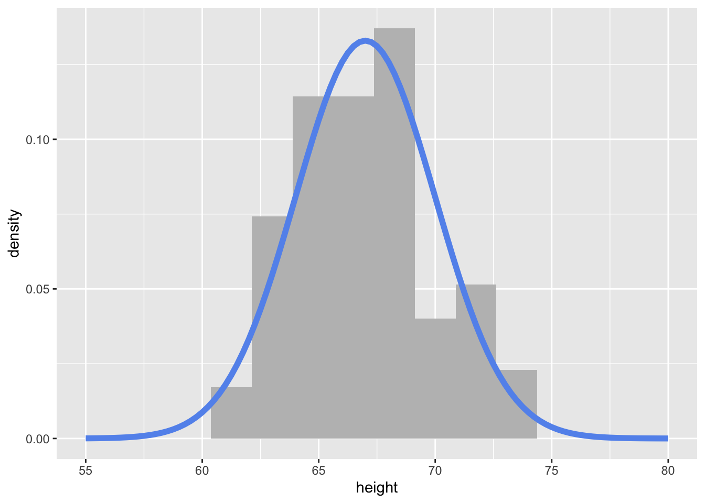

(logical_vec <- c(T, F, T, T))[1] TRUE FALSE TRUE TRUE(numeric_vec <- c(3, 1, 4, 5))[1] 3 1 4 5(char_vec <- c("A", "AB", "ABC", "ABCD"))[1] "A" "AB" "ABC" "ABCD"Reading: 19 minute(s) at 200 WPM
Videos: 46 minute(s)
We just learned the rule of “don’t repeat yourself more than two times” and to instead automate our procedures with functions in order to remove duplication of code. We have used tools such as across() to help eliminate this copy-paste procedure even further. This is a form of iteration in programming as across() “iterates” over variables, applying a function to manipulate each variable and then doing the same for the next variable.
while() and for() loops are a common form of iteration that can be extremely useful when logically thinking through a problem, however are extremely computationally intensive. Therefore, loops will not be the focus of this chapter. If you are interested, you can go read about loops in the pre-reading material of this text.
You can read all about iteration in the previous version of R4DS.
In the pre-reading, we introduce the different data structures we have worked with in R. We are going to do a review of some of the important data structures for this chapter.
A vector is a 1-dimensional data structure that contains items of the same simple (‘atomic’) type (character, logical, integer, factor).
(logical_vec <- c(T, F, T, T))[1] TRUE FALSE TRUE TRUE(numeric_vec <- c(3, 1, 4, 5))[1] 3 1 4 5(char_vec <- c("A", "AB", "ABC", "ABCD"))[1] "A" "AB" "ABC" "ABCD"You index a vector using brackets: to get the \(i\)th element of the vector x, you would use x[i] in R or x[i-1] in python (Remember, python is 0-indexed, so the first element of the vector is at location 0).
logical_vec[3][1] TRUEnumeric_vec[3][1] 4char_vec[3][1] "ABC"You can also index a vector using a logical vector:
numeric_vec[logical_vec][1] 3 4 5char_vec[logical_vec][1] "A" "ABC" "ABCD"logical_vec[logical_vec][1] TRUE TRUE TRUEA list is a 1-dimensional data structure that has no restrictions on what type of content is stored within it. A list is a “vector”, but it is not an atomic vector - that is, it does not necessarily contain things that are all the same type.
(
mylist <- list(
logical_vec,
numeric_vec,
third_thing = char_vec[1:2]
)
)[[1]]
[1] TRUE FALSE TRUE TRUE
[[2]]
[1] 3 1 4 5
$third_thing
[1] "A" "AB"List components may have names (or not), be homogeneous (or not), have the same length (or not).
Indexing necessarily differs between R and python, and since the list types are also somewhat different (e.g. lists cannot be named in python), we will treat list indexing in the two languages separately.

pepper
pepper[1], the return value is always a list containing the selected element(s).
pepper[[1]], the return value is the selected element.
pepper[[1]][[1]].There are 3 ways to index a list:
mylist[1][[1]]
[1] TRUE FALSE TRUE TRUEmylist[2][[1]]
[1] 3 1 4 5mylist[c(T, F, T)][[1]]
[1] TRUE FALSE TRUE TRUE
$third_thing
[1] "A" "AB"mylist[[1]][1] TRUE FALSE TRUE TRUEmylist[["third_thing"]][1] "A" "AB"x$name. This is equivalent to using x[["name"]]. Note that this does not work on unnamed entries in the list.mylist$third_thing[1] "A" "AB"To access the contents of a list object, we have to use double-indexing:
mylist[["third_thing"]][[1]][1] "A"You can get a more thorough review of vectors and lists from Jenny Bryan’s purrr tutorial introduction (Bryan n.d.).
Operations in R are (usually) vectorized - that is, by default, they operate on vectors. This is primarily a feature that applies to atomic vectors (and we don’t even think about it):
(rnorm(10) + rnorm(10, mean = 3)) [1] 3.1279011 0.8117717 3.3118322 1.3914590 3.3758025 3.6953706 2.3839779
[8] 3.0462192 3.0782028 2.0299290With vectorized functions, we don’t have to use a for loop to add these two vectors with 10 entries each together. In languages which don’t have implicit support for vectorized computations, this might instead look like:
a <- rnorm(10)
b <- rnorm(10, mean = 3)
result <- rep(0, 10)
for (i in 1:10) {
result[i] <- a[i] + b[i]
}
result [1] 3.903898 4.807578 4.536762 4.475939 3.782858 2.861930 7.850846 1.761996
[9] 4.372558 2.404663That is, we would apply or map the + function to each entry of a and b. For atomic vectors, it’s easy to do this by default; with a list, however, we need to be a bit more explicit (because everything that’s passed into the function may not be the same type).
I find the purrr package easier to work with, so we won’t be working with the base functions (the apply family) in this course. You can find a side-by-side comparison in the purrr tutorial.
You can also watch Dr. Theobold’s video to learn more:
The R package purrr (and similar base functions apply, lapply, sapply, tapply, and mapply) are based on extending “vectorized” functions to a wider variety of vector-like structures.
map()purrr is a part of the tidyverse, so you should already have the package installed. When you load the tidyverse with library(), this also loads purrr.
install.packages("purrr")
library(purrr)(REQUIRED) Please read Sections 21.5 through 21.7 R for Data Science
The Joy of Functional Programming (for Data Science): Hadley Wickham’s talk on purrr and functional programming. ~1h video and slides.
(The Joy of Cooking meets Data Science, with illustrations by Allison Horst)
Pirating Web Content Responsibly with R and purrr (a blog post in honor of international talk like a pirate day) (Rudis 2017)
Setting NAs with purrr (uses the naniar package)
Mappers with purrr - handy ways to make your code simpler if you’re reusing functions a lot.
In statistics, we often want to simulate data (or create fake data) for a variety of purposes. For example, in your first statistics course, you may have flipped coins to “simulate” a 50-50 chance. In this section, we will learn how to simulate data from statistical distributions using R.
Functions like rnorm() rely on something called pseudo-randomness. Because computers can never be truly random, complicated processes are implemented to make “random” number generation be so unpredictable as to behave like true randomness.
This means that projects involving simulation are harder to make reproducible. For example, here are two identical lines of code that give different results!
rnorm(1, mean = 0, sd = 1)[1] 1.791665rnorm(1, mean = 0, sd = 1)[1] -2.225902Fortunately, pseudo-randomness depends on a seed, which is an arbitrary number where the randomizing process starts. Normally, R will choose the seed for you, from a pre-generated vector:
head(.Random.seed)[1] 10403 84 1067328271 -441114602 222997184 -1672147837However, you can also choose your own seed using the set.seed() function. This guarantees your results will be consistent across runs (and hopefully computers):
set.seed(1234)
rnorm(1, mean = 0, sd = 1)[1] -1.207066set.seed(1234)
rnorm(1, mean = 0, sd = 1)[1] -1.207066Of course, it doesn’t mean the results will be the same in every subsequent run if you forget or reset the seed in between each line of code!
set.seed(1234)
rnorm(1, mean = 0, sd = 1)[1] -1.207066## Calling rnorm() again without a seed "resets" the seed!
rnorm(1, mean = 0, sd = 1)[1] 0.2774292It is very important to always set a seed at the beginning of a Quarto document that contains any random steps, so that your rendered results are consistent.
Note, though, that this only guarantees your rendered results will be the same if the code has not changed.
Changing up any part of the code will re-randomize everything that comes after it!
When writing up a report which includes results from a random generation process, in order to ensure reproducibility in your document, use `r ` to include your output within your written description with inline code.
my_rand <- rnorm(1, mean = 0, sd = 1)
my_rand[1] 1.084441Using r my_rand will display the result within my text:
My random number is 1.0844412.
Alternatively, you could have put the rnorm code directly into the inline text r rnorm(1, mean = 0, sd = 1), but this can get messy if you have a result that requires a larger chunk of code.
The code below creates a tibble (read fancy data frame) of 100 heights randomly simulated (read drawn) from a normal distribution with a mean of 67 and standard deviation of 3.
set.seed(93401)
my_samples <- tibble(height = rnorm(n = 100,
mean = 67,
sd = 3)
)
my_samples |>
head()# A tibble: 6 × 1
height
<dbl>
1 63.1
2 66.7
3 68.2
4 63.4
5 68.9
6 71.4To visualize the simulated heights, we can look at the density of the values. We plot the simulated values using geom_histogram() and define the local \(y\) aesthetic to plot calculate and plot the density of these values. We can then overlay the normal distribution curve (theoretical equation) with our specified mean and standard deviation using dnorm within stat_function()
my_samples |>
ggplot(aes(x = height)) +
geom_histogram(aes(y = ..density..),
binwidth = 1.75,
fill = "grey"
) +
stat_function(fun = ~ dnorm(.x, mean = 67, sd = 3),
col = "cornflowerblue",
lwd = 2
) +
xlim(c(55, 80))